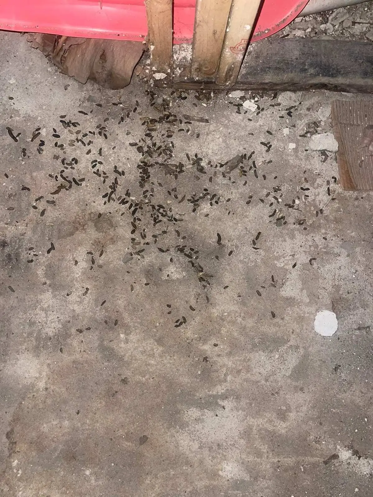

Inspection.
Find it before we fix it.
Every job starts with an inspection. We find where animals get in, what they damaged, and what it takes to keep them out — before any work begins.
What the inspection examines
Outside first. The roofline is read the way an animal reads it: every joint, vent, and edge is a candidate entry. Soffits and fascia are checked for gaps and chewing, vents for damaged covers, the chimney and its flashing for openings, and the junctions where porches and additions meet the main roof — the transitions where gaps open as buildings settle. At ground level the foundation, door sweeps, and utility penetrations are checked: the holes drilled for pipes and wires are rarely sealed and are standard rodent entries.
Inside, the attic and crawl space are assessed for the evidence animals leave: droppings and where they concentrate, rub marks along runs, nesting material, gnawing, and the state of the insulation. The signs identify the species, how long the problem has been established, and which entries are active — a gap with rub marks and droppings below it is in use; a gap without them may be next.

Reading the signs
Half of an inspection is dating what it finds. Fresh droppings are dark and soft; old ones are grey and crumble. Rub marks build slowly, along routes used for months. A nest of shredded insulation with fresh material in it is current; a flattened, dusty nest may be last year’s. The distinction decides the job: active signs mean animals now, old signs mean a history the building should be closed against. The findings separate the two, because sealing against a history and removing a present colony are different scopes — and a customer should not be sold one as the other. Where the evidence is ambiguous, the findings say so and say what would settle it.
What the findings include
- The entry points, named plainly — where they are and which are active
- The species the signs point to, and the evidence for it
- The damage found — insulation, wiring, contamination — stated as found
- The recommended scope and its sequence: what is removed, what is sealed, what is restored
- Any timing restrictions that apply, explained — bat work in particular is set by the season
The findings are written to be used. They are the basis of the scope, the record the work is checked against, and the file a business keeps for its own inspectors and auditors.
What an inspection is not
It is not a quote given over the phone from a description — buildings differ too much for that to mean anything. And it is not a sales visit with the scope already decided. The inspection decides what the job is. Where the signs point to a small, contained problem, the findings say so. Where they point to a colony, a season’s worth of damage, or a building open at a dozen points, they say that instead — with the entries and the evidence listed, so the scope that follows can be checked against the building itself.